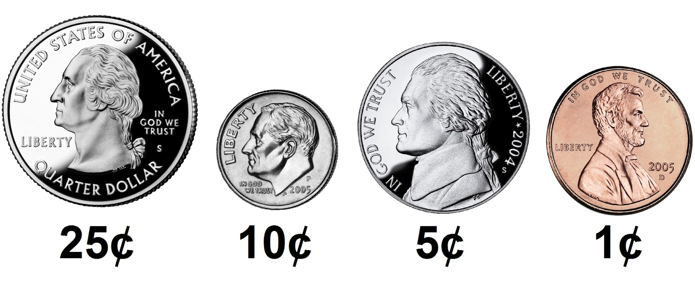

Cash
Greedy Algorithms

When making change, odds are you want to minimize the number of coins you’re dispensing for each customer, lest you run out (or annoy the customer!). Fortunately, computer science has given cashiers everywhere ways to minimize numbers of coins due: greedy algorithms.
According to the National Institute of Standards and Technology (NIST), a greedy algorithm is one “that always takes the best immediate, or local, solution while finding an answer. Greedy algorithms find the overall, or globally, optimal solution for some optimization problems, but may find less-than-optimal solutions for some instances of other problems.”
What’s all that mean? Well, suppose that a cashier owes a customer some change and in that cashier’s drawer are quarters (25¢), dimes (10¢), nickels (5¢), and pennies (1¢). The problem to be solved is to decide which coins and how many of each to hand to the customer. Think of a “greedy” cashier as one who wants to take the biggest bite out of this problem as possible with each coin they take out of the drawer. For instance, if some customer is owed 41¢, the biggest first (i.e., best immediate, or local) bite that can be taken is 25¢. (That bite is “best” inasmuch as it gets us closer to 0¢ faster than any other coin would.) Note that a bite of this size would whittle what was a 41¢ problem down to a 16¢ problem, since 41 - 25 = 16. That is, the remainder is a similar but smaller problem. Needless to say, another 25¢ bite would be too big (assuming the cashier prefers not to lose money), and so our greedy cashier would move on to a bite of size 10¢, leaving him or her with a 6¢ problem. At that point, greed calls for one 5¢ bite followed by one 1¢ bite, at which point the problem is solved. The customer receives one quarter, one dime, one nickel, and one penny: four coins in total.
It turns out that this greedy approach (i.e., algorithm) is not only locally optimal but also globally so for America’s currency (and also the European Union’s). That is, so long as a cashier has enough of each coin, this largest-to-smallest approach will yield the fewest coins possible. How few? Well, you tell us!
Implementation Details
Implement, in a file called cash.c in a ~/pset1/cash directory, a program that first asks the user how much change is owed and then prints the minimum number of coins with which that change can be made.
- Use
get_floatto get the user’s input andprintfto output your answer. Assume that the only coins available are quarters (25¢), dimes (10¢), nickels (5¢), and pennies (1¢).- We ask that you use
get_floatso that you can handle dollars and cents, albeit sans dollar sign. In other words, if some customer is owed $9.75 (as in the case where a newspaper costs 25¢ but the customer pays with a $10 bill), assume that your program’s input will be9.75and not$9.75or975. However, if some customer is owed $9 exactly, assume that your program’s input will be9.00or just9but, again, not$9or900. Of course, by nature of floating-point values, your program will likely work with inputs like9.0and9.000as well; you need not worry about checking whether the user’s input is “formatted” like money should be.
- We ask that you use
- You need not try to check whether a user’s input is too large to fit in a
float. Usingget_floatalone will ensure that the user’s input is indeed a floating-point (or integral) value but not that it is non-negative. - If the user fails to provide a non-negative value, your program should re-prompt the user for a valid amount again and again until the user complies.
- So that we can automate some tests of your code, be sure that your program’s last line of output is only the minimum number of coins possible: an integer followed by
\n. - Beware the inherent imprecision of floating-point values. Recall
floats.cfrom class, wherein, ifxis2, andyis10,x / yis not precisely two tenths! And so, before making change, you’ll probably want to convert the user’s inputted dollars to cents (i.e., from afloatto anint) to avoid tiny errors that might otherwise add up! -
Take care to round your cents to the nearest penny, as with
round, which is declared inmath.h. For instance, ifdollarsis afloatwith the user’s input (e.g.,0.20), then code likeint cents = round(dollars * 100);will safely convert
0.20(or even0.200000002980232238769531250) to20.
Your program should behave per the examples below.
$ ./cash
Change owed: 0.41
4
$ ./cash
Change owed: -0.41
Change owed: foo
Change owed: 0.41
4
Walkthrough
How to Test Your Code
Does your code work as prescribed when you input
-1.00(or other negative numbers)?0.00?0.01(or other positive numbers)?- letters or words?
- no input at all, when you only hit Enter?
You can also execute the below to evaluate the correctness of your code using check50. But be sure to compile and test it yourself as well!
check50 cs50/problems/2021/x/cash
Execute the below to evaluate the style of your code using style50.
style50 cash.c
How to Submit
Execute the below, logging in with your GitHub username and password when prompted. For security, you’ll see asterisks (*) instead of the actual characters in your password.
submit50 cs50/problems/2021/x/cash